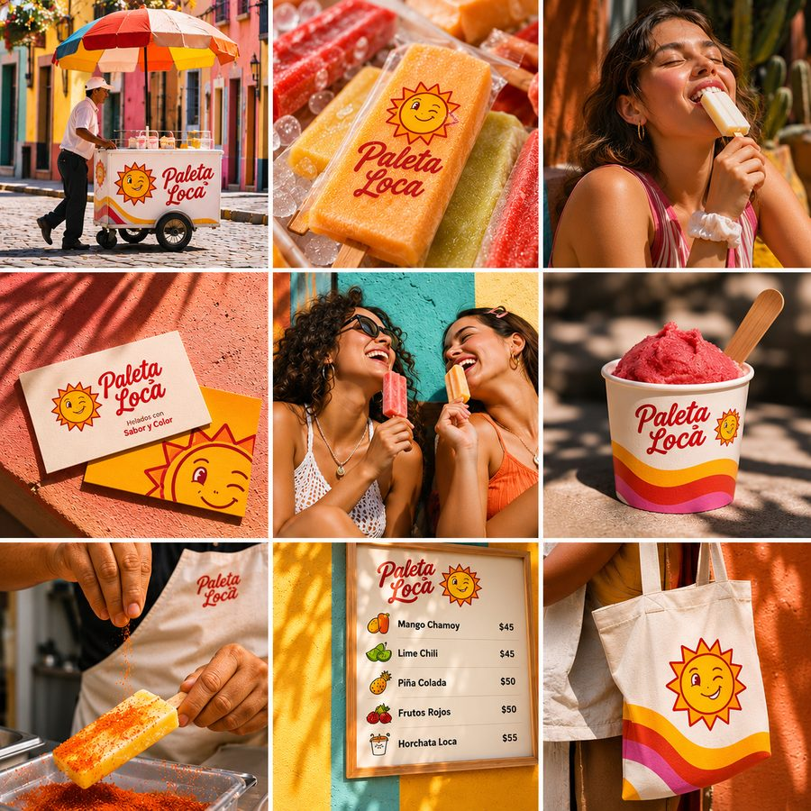

A once-in-a-generation moment to say who Brazosport is.
1968
year founded, per the College's 2019 RFQ verify
60
years to celebrate, with a year-long campaign
3
identities to unify: College, Gators, anniversary
2027
Gators baseball targeted for spring verify
What you asked for
Brand identity services covering the institutional brand, an athletics identity for the Gators and a campaign for the College's 60th anniversary.
What success looks like
Six months after launch, a flyer from any department looks like Brazosport without a call to Marketing, and the Gators marks are on uniforms and game-day posts.
Sources: RFP 2026.07 notice on IonWave; Brazosport College 2019 RFQ; public athletics listings (to confirm with the College).
A clear position and a system that works from a diploma to a social post.
Research, platform, system
2
Athletics identity
Gators marks that energize fans, reproduce on uniforms and still read as Brazosport.
Primary, secondary, wordmarks
3
60th anniversary
More than a commemorative logo: a year of stories that bring alumni back.
Signature, theme, campaign kit
4
The risk to avoid
Three good identities that look like three different institutions. We design them as one family from the first sketch.
To confirm in discovery: current marks and any registered trademarks verify · athletics conference, NJCAA or vendor requirements verify · anniversary dates and events verify
A sun rising over the Gulf: a place and a beginning. Works in one color and at small sizes.
ROUTE B · ATHLETICS "GATOR SCALE"
GATORS
Shield and scale pattern for uniforms, courts and game-day social, in the masterbrand's colors.
ROUTE C · 60TH "BUILT HERE"
Built here. For sixty years.
SINCE 1968
A year-long campaign told by the alumni, employers and students the College built.
Preliminary concepts created for this proposal. Exploratory palette and type, not the College's current standards. Final routes come from the research in weeks 1 to 6.
The brand presence we build: a world, not just a logo.
AYVENPerformance apparel
TRAZAUrban accessories
Atelier LorenzoLeather atelier

Paleta LocaIce cream
El Taco ClubRestaurant
Serena RitualSpa and wellness
Presence, not just a logo
This is the level of application we deliver: signage, apparel, merchandise, packaging and social. For Brazosport, it applies to the College, the Gators and the 60th anniversary, as one family.
Logo systemPalette and typeSignageApparel and merchPackagingSocial templates
Concept brands created by TWO&HUMAN to show our art direction and standard of execution. Fictional brands, not client projects.
Audit, interviews, student sessions, survey and findings report.
Brand platform
Positioning, promise, pillars, voice and key messages.
Institutional identity
Symbol, wordmark, unit lockups, color, type and photo direction.
Athletics identity
Primary and secondary marks, wordmarks, uniform and social uses.
60th anniversary
Signature, theme line, campaign guide, calendar and templates.
Guidelines and files
Brand guidelines and source files: AI, EPS, SVG, PNG.
Templates
Up to 25 editable templates: slides, letterhead, flyers, social, email.
Launch
Internal launch kit and a brand training session.
Assumptions that protect your budget: three routes in week 7 and one choice · two refinement rounds on the chosen route · fonts and photos licensed in the College's name at cost · anything outside scope quoted in writing before work starts.
Kickoff targeted for mid-January 2027 verify; final delivery in May 2027 leaves the summer to prepare for fall and the anniversary year.
Committee approves platform and routeEvery department trained or with the launch kit in 60 daysBrand-use review at month 6Gators marks in use for the first season
Route guarantee. If the committee does not approve any of the three routes after the two refinement rounds, we develop a fourth route at no cost.
One Brazosport: research 2,400 · platform 1,800 · institutional 3,600 · athletics 3,400 · 60th campaign 2,400 · guidelines and templates 2,400 · launch 800. Payments 30/40/30 on approved milestones · rollout billed monthly, cancellable with 30 days' notice · fonts, photos and printing at cost · valid 90 days · also entered in the College's price format verify.